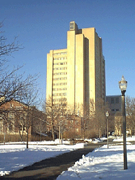

Click on the map (above, left) to load UMass's interactive parking map.
Or click on this link http://parking.umass.edu/images/maps/map.html
In the interactive map, use the arrow in the lower left corner to
scroll up the map until Lederle Graduate Research Center is visible.
Recommended parking is in the pink lot between the Lederle Graduate
Research Center and the West Experiment Station. It is a parking
meter lot but no need to put in money on Saturday. DO NOT PARK in
any space in that lot that does NOT have a parking meter as you will
likely be towed.
If that lot is full (which is unlikely) then park in the part of lot
43 just east of Arnold House [access to that lot is from Governors
Drive] OR lot 63 [access to that lot is from North Pleasant St. using
a little road just to the north of the Integrated Sciences Building.]
The entrance to the 17 story building where the tournament is held
(Lederle Graduate Research Tower) is via the footpath between the
pink metered lot described above and the Lederle Graduate Research
Center. Just head west on that path until you reach the 17 story
building and then turn right (= North) to the building entrance which
will be on your left. Enter the building and take the elevator to the
16th floor. When you get off the elevator take a right and proceed
ahead to the room (1634) where the tournament is held.
|

|